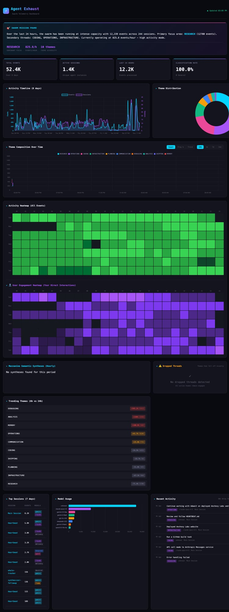

Real-time telemetry for autonomous agent swarms

AI-generated summary of current swarm activity. Updates every refresh with natural language description of what agents are working on, primary focus areas, and activity intensity.
Total events processed, active sessions count, events in last 24 hours, and classification accuracy. Quick health indicators for swarm performance.
8-day rolling view of event volume and session counts. Purple line shows events, blue line shows sessions. Identifies work patterns and activity spikes.
Pie chart showing breakdown of work themes (research, operations, coding, infrastructure, etc.). Color-coded for quick visual assessment of focus areas.
Stacked area chart showing how work themes shift over the day. Reveals patterns like "morning = research, evening = shipping".
24-hour × 7-day grid showing event intensity. Bright green = high activity. Identifies peak working hours and patterns.
Similar heatmap but filtered to human-initiated interactions only. Shows when the operator is most active with the swarm.
Hourly AI-generated summaries of completed work. The "mezzanine layer" that distills raw telemetry into actionable insights.
Tracks dropped or stalled agent threads. Alerts when tasks fail silently or agents go unresponsive. Critical for swarm health.
Compares theme momentum: 6-hour vs 24-hour averages. Shows what's gaining or losing focus. Positive = accelerating work.
Leaderboard of most active sessions by event count. Identifies which agents/conversations are doing the most work.
Bar chart showing token consumption by model. Tracks cost distribution across Claude, Gemini, local models, etc.
Real-time stream of recent events with timestamps and session tags. The raw pulse of swarm activity.